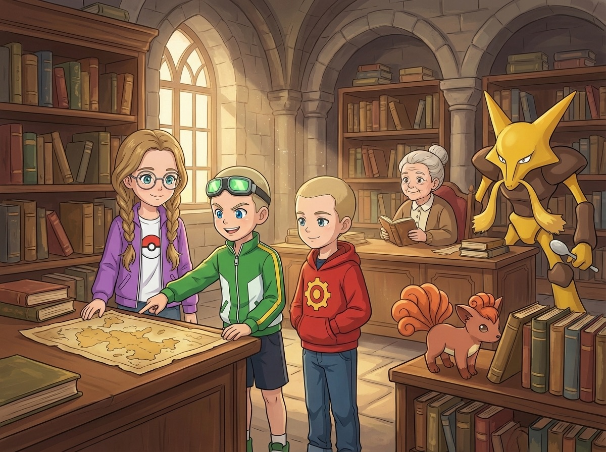
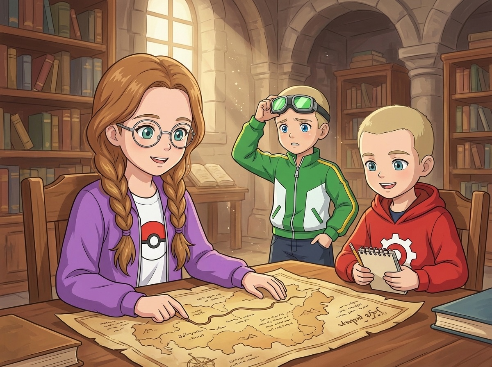
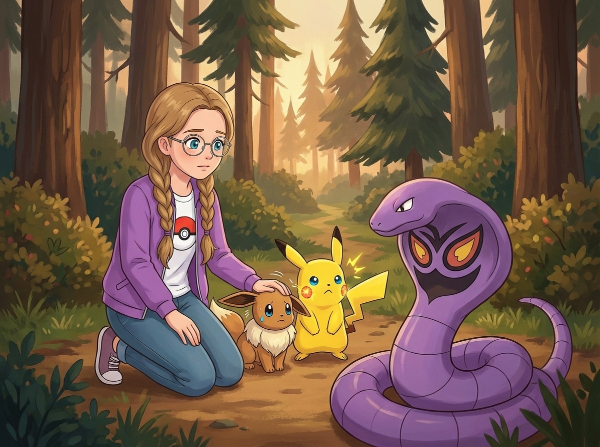
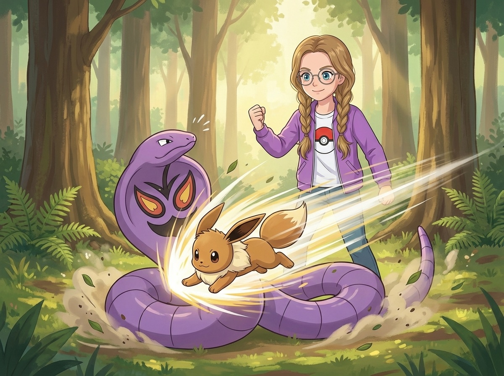
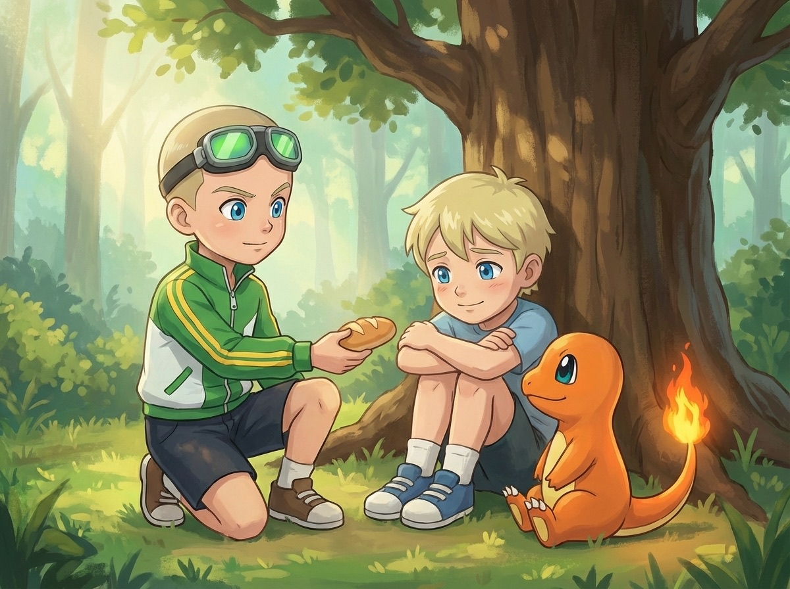
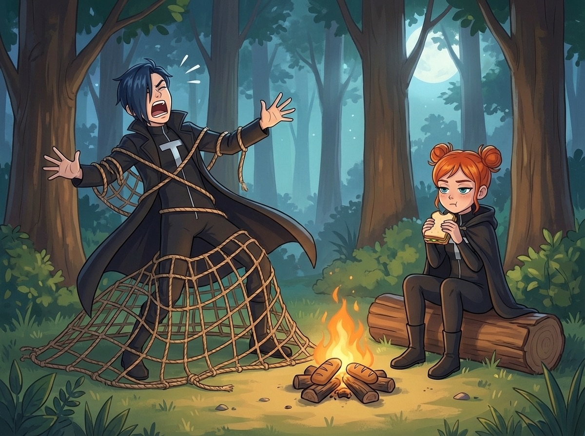
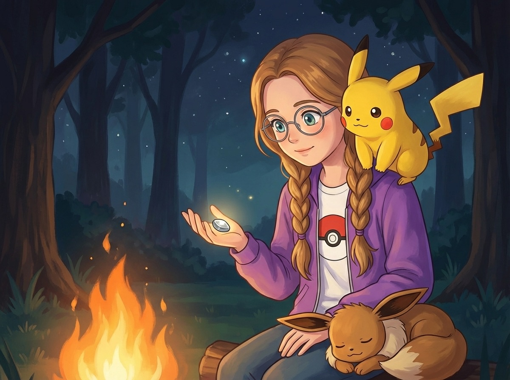

Сезон 1 — Три тренера и тайна Серебряного леса
Эпизод 7. «Карта Серебряного леса»

Городок назывался Тихие Кроны — и заслуживал своё имя.
Ни рынка, ни толпы, ни зазывал. Три улицы, все вымощенные бурым кирпичом, скрипучая вывеска «Покемон-центр» над крайним домом, и тишина — такая плотная, что Макстер споткнулся о неё как о порог.
— Тут что, все спят? — он покрутил головой. Гоглы съехали набок.
— Тише, — Ромус поправил капюшон красной худи. Шестерёнка на груди блеснула на солнце. — Тут все читают.
Он показал на здание через площадь.
Библиотека. Каменная, двухэтажная, с тёмными окнами и тяжёлой дверью.
Над входом — деревянная табличка: «Читальня Тихих Крон. Вход свободный.» Буквы были вырезаны ножом и потемнели от времени.
Кристи толкнула дверь. Скрипнуло. Внутри пахло пылью, старой бумагой и чем-то сладковатым — как сухие яблоки на чердаке.
Деревянные полки уходили до потолка, книги стояли плотно, корешок к корешку. Тишина здесь была другая — не пустая, а наполненная.
Сикстейлс (Vulpix) обнюхивала корешки книг на нижней полке. Фыркнула от пыли — и чихнула. Из ноздрей вырвался маленький язычок пламени. Кристи быстро прикрыла ближайшую книгу ладонью.
— Вал! — возмущённо. Как будто говорила: «я не нарочно!»
Кристи улыбнулась и почесала Сикстейлс за ухом. Иви стоял рядом — аристократично, лапка на лапку — и смотрел на полки с видом знатока.
Пока мальчики разглядывали библиотеку, Кристи задумалась.
Ромус выиграл турнир. Макстер дрался с Блейзом. А я? Я поймала Сикстейлс — но это было вечером, после всех. Как будто я всегда — после.
Пикачу на плече Кристи повёл ушами. Посмотрел на неё. Тихо ткнулся носом в щёку.
За стойкой сидела старая женщина — маленькая, сухая, с белыми волосами и глазами, которые ещё не забыли, как быть острыми. Рядом с ней — неподвижно, как статуя — стоял покемон. Высокий, жёлтый, с длинными усами и ложкой в каждой руке.
— Алаказем (Alakazam), — прошептала Кристи. — Психический тип. Один из самых умных покемонов в мире. IQ выше четырёхсот.
— Выше чего? — Макстер.
— Выше твоего, — Ромус. Спокойно. Без улыбки.
Макстер открыл рот, но библиотекарша подняла руку — и все замолчали. Даже Чармандер (Charmander), который собирался чихнуть. Сквиртл (Squirtle) и Бульбазавр (Bulbasaur) стояли у ног Ромуса — оба молча, как по команде. Пиджеотто (Pidgeotto) устроился на перилах у входа — внутрь не полез, слишком тесно.
— Вы путешественники?
— Да, — Кристи шагнула вперёд. Косички качнулись. — Мы ищем информацию о Серебряном лесе. Мой друг, — она кивнула на Ромуса, — нашёл упоминание в записях. Старые карты, может быть.
Библиотекарша медленно встала. Алаказем не шевельнулся — только левая ложка чуть повернулась.
— Карты есть. Но у меня другая просьба.
Она рассказала. Внук — мальчик лет десяти, зовут Тео — ушёл к опушке леса два дня назад. Хотел посмотреть на серебряные деревья. Не вернулся.
— Два дня? — Макстер нахмурился. — И никто не пошёл искать?
— Здесь некому, — библиотекарша глянула в окно. — Городок маленький. Рыбаков нет — мы не у воды. Только книги и старики.
Макстер переступил с ноги на ногу.
— Мы торопимся к Громовому Городу. Если задержимся...
— Мы поможем, — Кристи не дала ему договорить.
— Кристи...
— Два дня, Макстер. Ребёнок один в лесу два дня.
Ромус кивнул:
— Кристи права. Нельзя пройти мимо.
Макстер посмотрел на Чармандера. Тот смотрел на Макстера. Пламя на хвосте горело ровно — не ярко, не тускло. Спокойно.
— Ладно, — Макстер выдохнул. — Ладно. Идём.
Но сначала — карта. Библиотекарша достала из-под стойки свёрнутую в трубку бумагу — жёлтую, хрупкую, с обожжёнными краями. Развернула на столе.
Карта Серебряного леса. Но надписи — полустёртые, мелкие, написанные от руки. Старый шрифт, буквы слипались.
Ромус склонился над картой. Прищурился. Достал блокнот.
— Мне нужно время, — пробормотал он.
Макстер уставился на буквы. Потом на Ромуса. Потом на буквы.
— Я ничего не понимаю, — честно признался он.

Кристи села рядом. Провела пальцем по строчке. И начала читать — вслух, ровно, без запинки.
— «Серебряный лес. Тропа от Тихих Крон — два дня пешком. Не входить без проводника. Деревья с серебряными листьями — только в центре леса. Пометка красным: ОПАСНО.»
Ромус поднял глаза от блокнота.
— Ты прочитала это... за минуту.
— Я читаю с четырёх лет, — Кристи пожала плечами. — Мне мама сказала, что нужно уметь читать, чтобы пользоваться Покедексом. Я выучилась за неделю.
Пикачу на её плече кивнул. Один раз. Мол — «да, она такая».
Алаказем впервые шевельнулся. Правая ложка поднялась — и книга с верхней полки мягко слетела вниз, раскрылась на нужной странице и легла перед Кристи. Без звука. Без касания.
— Он показывает вам маршрут, — библиотекарша чуть улыбнулась. — Он тоже хочет, чтобы Тео нашёлся.
Кристи перевела взгляд с карты на книгу. На дверь, за которой начиналась дорога к лесу.
— Мы найдём его. — Тихо. Но так, что никто не усомнился.
Лесная тропа начиналась за последним домом городка — просто уходила в деревья и исчезала.
Хвоя хрустела под ногами. Пахло грибами, мокрой корой и чем-то резким — хвойной смолой, которая липла к пальцам, если тронуть ствол. Пиджеотто (Pidgeotto) на плече Макстера нахохлился — ему не нравились низкие ветки. Каждая норовила задеть его крыло.
— Пидж! — раздражённо крикнул он, когда ветка шлёпнула его по голове.
— Можешь лететь сверху, — предложил Макстер.
Пиджеотто посмотрел на него. На деревья. На просвет неба между кронами — узкий, как щель.
— Пидж. — Нет.
Чармандер бежал рядом с Макстером, то и дело оглядываясь на лес с любопытством. Сквиртл топал за Ромусом — маленький и деловитый.
Бульбазавр шёл впереди. Серьёзный, как всегда. Луковица на спине чуть приоткрылась — он улавливал запахи лучше всех.
— Бульба, — он остановился. Принюхался. Повернул налево.
— Он что-то чует, — Ромус присмотрелся. — Бульбазавр, это Тео? Человек?
— Бульба, — неопределённо.
— Это «да» или «может быть»? — Макстер.
— Это «бульба», — ответил Ромус.
— Полезный ответ, — Макстер закатил глаза.
— Очень, — Ромус чуть улыбнулся, не повернувшись.
Они прошли ещё метров триста, когда тропа сузилась. Кусты по бокам стали гуще, ветки — ниже. Свет тускнел. Иви (Eevee) у ног Кристи замедлил шаг.
Остановился.
Задрожал.
Кристи посмотрела вперёд.
На тропе, свернувшись кольцами, лежал покемон. Большой — метра три в длину. Фиолетовая чешуя, капюшон как у кобры, жёлтые глаза с вертикальными зрачками. На груди — узор, похожий на злое лицо.
Арбок (Arbok). Ядовитый тип.
Он не нападал. Просто лежал — и смотрел. Этого было достаточно.
Сикстейлс (Vulpix) выглянула из-за ноги Кристи и тихо зарычала. Шесть хвостов распушились. Новенькая, но не трусиха.
Иви дрожал. Шерсть стояла дыбом, уши прижаты. Он был втрое меньше Арбока. Нет — вчетверо.

Кристи присела рядом с Иви. Положила руку ему на спину — тёплую, дрожащую.
— Ты не обязан выходить, — прошептала она. — Только если хочешь.
Он смотрит на меня. Ждёт. Если я отступлю — он тоже отступит. Значит, я не отступаю.
Иви посмотрел на неё. Большие карие глаза — мокрые, испуганные. Но он не отступил.
— Ии-ви, — тихо. Как будто говорил: «я попробую».
Кристи встала. Выдохнула. Поправила косичку — привычный жест, когда нужно собраться.
Спокойно. Я знаю, что делать.
— Пикачу, ты первый.
Пикачу спрыгнул с плеча. Щёки засверкали.
— Thundershock!
Молния ударила Арбока. Тот зашипел — раздражённо, не испуганно.
— Ещё раз! Thundershock!
Вторая молния. Арбок дёрнулся — но не отступил. Развернул кольца и метнулся вперёд — Bite!
— Влево! Уклоняйся!
Пикачу метнулся — но Арбок был быстрый. Второй бросок. Клыки щёлкнули в сантиметре от хвоста.
— Он слишком быстрый для Пикачу. Назад! — Кристи подняла покебол. Красный луч. Пикачу втянулся. — Сикстейлс, твоя очередь!
Сикстейлс вышла. Фыркнула. Шерсть вздулась.
— Ember!
Струя огня ударила Арбока в морду. Тот дёрнулся — обжёгся. Зашипел злее.
Арбок бросился — Wrap! Обвил Сикстейлс кольцами. Та вскрикнула — «Вал!» — пламя на мгновение вспыхнуло, опалило чешую Арбока, но хватка не ослабла.
— Сикстейлс, возвращайся! — покебол. Красный луч вырвал её из колец.
Арбок остался с пустыми кольцами. Зашипел — удивлённо.
Кристи покосилась на Иви. Тот всё ещё дрожал. Но стоял.
— Иви. Можешь?
Пауза. Долгая — секунда, две, три.
— Ии-ви! — громче, чем раньше. Шерсть всё ещё дыбом — но лапы крепко стояли на земле.
— Quick Attack! Прямо в бок — пока он развёрнут!

Иви рванул. Маленький, рыже-коричневый, быстрый — как пуля. Удар в незащищённый бок Арбока.
Тот покачнулся. Иви отскочил. Арбок повернулся — медленнее, чем раньше. Ожоги от Сикстейлс мешали.
— Ещё раз! Quick Attack!
Второй удар. Арбок зашатался. Капюшон опустился.
Он посмотрел на Кристи — долго, жёлтыми глазами — и уполз в кусты. Медленно. С достоинством.
Кристи выдохнула. Руки дрожали — она спрятала их за спину.
Иви стоял на тропе. Не дрожал. Дышал тяжело, уши торчали в разные стороны — но не дрожал.
Макстер за спиной присвистнул:
— Три покемона. Три замены. Ты его измотала, — Макстер покачал головой. — Я бы так не додумался.
— Арбок — ядовитый тип, — Ромус записывал в блокнот. — Против одного покемона он бы выстоял. Но Кристи чередовала: электричество, огонь, скорость. Каждый ослабил — следующий добил.
— Три разных типа, — Макстер кивнул. — Умно.
— Не умно, — Кристи обернулась. — Просто разнообразие. У каждого покемона своя сила.
Макстер хмыкнул:
— Звучит как ум, но в красивой упаковке.
Кристи не слушала. Она опустилась на колени и обняла Иви. Тот ткнулся носом ей в шею. Тёплый, мягкий, живой.
— Ты молодец, — прошептала она. — Ты был храбрым.
Иви вильнул хвостом. Один раз.
За поворотом тропы, где деревья расступались и открывалась маленькая поляна, они нашли Тео.
Мальчик сидел у корней огромного дуба, обхватив колени руками. Рядом лежал рюкзак — открытый, пустой. Он не плакал. Глаза были сухие, красные и очень уставшие.
— Тео? — Кристи подошла первой. — Тебя бабушка ищет.
Мальчик поднял голову. Моргнул. Как будто не сразу поверил, что видит людей.
— Я... заблудился, — голос хриплый, тихий. — Хотел посмотреть на серебряные деревья. Но дошёл только сюда. А обратно... не нашёл тропу.
— Два дня? — Макстер присел рядом. — Что ты ел?
— Ягоды. Красные. — Тео поморщился. — Кислые. Очень.
— Ты хотя бы проверил, что они не ядовитые? — Кристи нахмурилась.
— Я... понюхал?
— Понюхал, — Кристи закрыла глаза. — Ладно. Живой — и хорошо.
— А ночью? — Ромус.
— Ночью было страшно, — Тео обхватил колени крепче. — Что-то шуршало в кустах. Большое. Я думал — бабушкин Алаказем меня найдёт. Он обычно находит мои носки.
Пауза. Макстер фыркнул. Тео посмотрел на него — и тоже улыбнулся. Криво, одним уголком рта. Но улыбнулся.

Макстер снял рюкзак. Достал хлеб, флягу с водой. Протянул. Тео схватил — жадно, обеими руками.
Чармандер (Charmander) подошёл к мальчику, обнюхал его руку и сел рядом. Пламя на хвосте горело ровно и тепло — как маленький костёр. Тео покосился на огонь. Чуть улыбнулся — первый раз за два дня.
— У тебя тёплый покемон, — сказал он Макстеру. — Я ночью мёрз. Вот бы такого.
— Он всегда тёплый, — Макстер сел рядом. — Иногда слишком. Вчера подпалил мне рюкзак.
— Чар! — возмущённо. Мол, «это было один раз!»
— Два раза, — поправил Макстер.
Сикстейлс подошла к Тео и обнюхала его ботинок. Иви сел рядом — спокойный после боя, уши уже не дрожали.
Ромус осматривал поляну. Бульбазавр стоял рядом — серьёзный, настороженный.
— Тео, — Ромус повернулся. — Бабушка говорила, ты шёл к серебряным деревьям. Дошёл?
Мальчик полез в карман. Достал камень — маленький, с ладонь ребёнка. Гладкий, серебристый, блестел на солнце, как полированный металл.
— Вот. Лежал прямо на тропе. Красивый.
Кристи взяла камень. Повертела. Погладила пальцем — поверхность гладкая, чуть тёплая.
— Странный, — Кристи покачала камень на ладони. — Тяжелее, чем выглядит.
— Может, серебро? — Макстер потянулся.
— Серебро не бывает тёплым, — Ромус покачал головой.
— Можно? — Кристи протянула руку. Тео пожал плечами.
— Забери. Мне он не нужен. Я просто хотел посмотреть на лес.
Кристи положила камень в карман куртки — бережно, как покебол.
Сквиртл (Squirtle) подошёл к Тео и протянул ягоду. Серьёзно. Как Чанси в Покемон-центре.
Тео взял. Посмотрел на Сквиртла. На Чармандера, который грел ему бок.
На Бульбазавра, который стоял на страже. На Пикачу, который сидел на плече Кристи и наблюдал.
— У вас много покемонов, — тихо сказал он. — Вы тренеры?
— Начинающие, — Кристи улыбнулась. — Но стараемся.
— Начинающие? — Макстер выпрямился. — Я выиграл... — он запнулся. — ...несколько важных боёв.
Ромус промолчал. Но уголок губ дрогнул.
— У нас много друзей, — Кристи кивнула на покемонов. — Это главное.
Обратная дорога была проще — Бульбазавр помнил запахи и уверенно вёл группу. Пиджеотто взлетел над деревьями и кружил — высматривал тропу сверху.
Макстер нёс рюкзак Тео. Пиджеотто спустился из полёта и сел Макстеру на плечо — плотно, крыло к крылу. Он, который обычно сидел выше всех, сейчас хотел быть рядом.
Ромус шёл рядом с мальчиком и рассказывал что-то про типы покемонов — спокойно, как лекцию, и Тео слушал — внимательно, забыв про страх.
Библиотекарша ждала у двери. Увидела внука — и её лицо стало другим. Не радостным — спокойным. Как будто что-то внутри, что было натянуто два дня, наконец отпустило.
— Спасибо, — сказала она. — Вы первые, кто не прошёл мимо.
Алаказем стоял за её плечом. Ложки в его руках чуть звякнули — как аплодисменты.
— Карту забирайте, — добавила библиотекарша. — Она вам пригодится.
Вечером, когда тропа вывела их обратно к лесной дороге, Ромус развёл костёр. Как всегда — нож, авокадо, ровные дольки. Макстер жевал хлеб с тем, что осталось от масла (немного), и поглядывал на авокадо Ромуса с выражением вежливого ужаса.
Пиджеотто устроился на ветке — самой высокой — и смотрел сверху с видом короля, обозревающего владения. Сикстейлс лежала у костра, свернув хвосты, и грелась. Иви — рядом, подложив лапку под голову. Пикачу, как всегда, на плече Кристи.
Бульбазавр и Сквиртл сидели плечом к плечу. Сквиртл потушил искру, которая упала на траву. Бульбазавр одобрительно кивнул.
— Кристи, — Макстер прожевал. — Ты сегодня была... ну... как это...
— Не говори «огонь», — Ромус.
— Я и не собирался! Я хотел сказать «круто».
— Спасибо, — Кристи улыбнулась. — Ты тоже хорошо — дал Тео поесть первым. Не каждый бы.
Макстер пожал плечами. Но уголки губ дёрнулись — вверх. Чармандер рядом подпрыгнул. Пламя вспыхнуло.
— Чар?
— Ничего, ничего.
Ромус жевал авокадо и смотрел на карту из библиотеки, расправленную на коленях.
— Подожди. Тут есть закономерность, — он провёл пальцем по линии. — Видите? Тропа к Серебряному лесу идёт через реку. А на карте — красная метка. «Переправа. Опасно при высокой воде.»
— И когда вода высокая? — Кристи.
— Весной. Как сейчас.
Пауза. Треск костра. Где-то далеко — уханье совы.
И вдруг — голоса.
Ромус поднял руку. Все замерли. Голоса шли из-за холма — приглушённые, но отчётливые.
— ...и тогда мы схватим их покемонов! Прямо из покеболов! Пока спят!
— Дарк, покеболы нельзя открыть снаружи. Мы это уже обсуждали.
— А если осторожно?
— Нельзя. Открыть. Снаружи.
— А если ОЧЕНЬ осторожно?
Вздох.
Герои переглянулись. Ромус жестом показал: тихо. Подкрались к краю холма и заглянули вниз.
Костёр — маленький, чадящий. Дарк сидел на бревне в плаще — мокром, потому что он постирал его в ручье и забыл выжать. Перед ним на палке — хлеб. Подгоревший.
Фокс сидела напротив, скрестив руки, и жевала бутерброд.
— Мы — Команда Тень! — Дарк вскочил с бревна и воздел руки к небу. — Мы — гроза тренеров! Мы — ужас ночи!
Хлеб на палке упал в костёр. Вспыхнул.
— Твой ужин тоже горит, — заметила Фокс.
Дарк опустил глаза.
— ...это часть плана.
— У тебя нет плана.
Макстер зажал рот, чтобы не рассмеяться. Чармандер рядом фыркнул — и случайно поджёг кустик.
Сквиртл — мгновенно — залил его водой. ПШШШ. Дымок поднялся.
Дарк вскинул голову.
— Ты слышала?! Кто-то там! ЛОВУШКА!
Он дёрнул верёвку. Сеть, привязанная к дереву, должна была упасть на тропу.

Вместо этого сеть упала на Дарка. Он запутался. Упал. Покатился.
— Каждый раз, — Фокс даже не встала.
— ФОКС! Я ЗАПУТАЛСЯ!
— Вижу.
— ПОМОГИ!
— Вылезай сам. Я ем.
— Бежим, — шепнул Ромус.
Они побежали — тихо, по мягкой земле, между деревьями.
За спиной раздался грохот — Дарк пытался встать в сети. Крик Фокс: «Стой, ты затоптал мой бутерброд!» И далёкий, удаляющийся вопль:
— Мы ещё вернёмся!
— Нет, не вернёмся, — голос Фокс. — Мы заблудились.
Тишина.

У нового костра — подальше, за ручьём — Кристи достала серебряный камень из кармана. Положила на ладонь.
Камень был тёплый. Чуть теплее, чем днём.
— Камни не бывают тёплыми, — повторила она слова Ромуса.
Ромус посмотрел на камень. На Кристи.
— Запиши в Покедекс, — Ромус присел рядом. — Всё, что знаешь. Цвет, вес, температуру.
Кристи записала. Аккуратно. Как настоящий учёный.
Я не «только смотрела». Я прочитала карту. Нашла мальчика. Победила Арбока с тремя покемонами. И нашла камень, который не должен быть тёплым.
Иви свернулся у её ноги. Не дрожал. Спал — спокойно, ровно, глубоко.
Где-то далеко, над кронами, тёмный силуэт описал круг и бесшумно скользнул на восток. Никто не поднял голову.
Дорога вела дальше — к реке. За рекой, говорят, начинается другой лес. Тот, который на карте обведён красным.
Помочь тому, кто в беде, — важнее, чем прийти первым.